EPOCK / PROCESS ARCHIVE
공개 이미지 자료실
비식별 프로젝트 생성 이미지 24개. 재학습·제3자 재배포에 대한 포괄적인 라이선스를 부여하는 목록은 아닙니다. 원본 92개 중 68개는 공개를 보류했으며 별도 보존되어 있습니다.

3.2등신 리깅 친화형 캐릭터 가이드.png
큰 둥근 머리와 짧고 단순한 몸통의 무채색 캐릭터 3방향. 앞·뒤 팔을 몸통에서 비스듬히 벌린다. 표기된 3.2등신은 도해의 주장으로, 실제 비율을 측정해 검증하지 않았다.
img-007 · 파일 기록 2026-11-04T09:36:11.804461+00:00 · 직접 첨부 대응 미확인

3.2등신 캐릭터 베이스 턴어라운드.png
의상·신발 없이 단순화한 둥근 머리 캐릭터 3방향. 파일 생성 시각은 의상 제거 재요청 직후이나 직접 응답 파일인지 확인되지 않았다.
img-008 · 파일 기록 2026-11-04T09:39:04.641467+00:00 · 직접 첨부 대응 미확인

3.2등신 캐릭터 턴어라운드 가이드.png
007보다 머리 대비 몸통과 팔다리가 길고 가는 단순 캐릭터 3방향. 이미지에 3.2등신 표기가 있으나 정확한 비율은 측정하지 않았다.
img-009 · 파일 기록 2026-11-04T09:37:12.127321+00:00 · 직접 첨부 대응 미확인

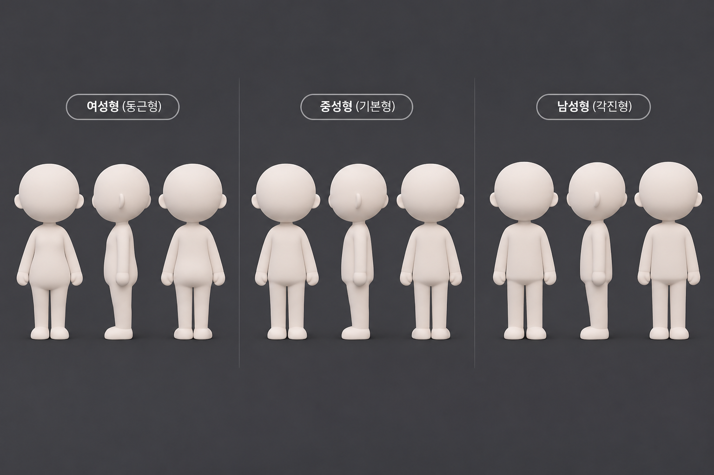
3D 캐릭터 체형 비교표.png
여성·중성·남성 치비 체형 3방향 도표. 팔이 몸통 가까이 아래로 향한다.
img-012 · 파일 기록 2026-11-04T09:01:57.029521+00:00 · 직접 첨부 대응 미확인

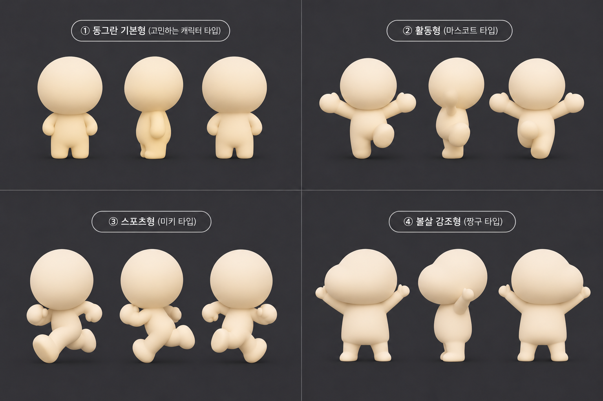
4가지 치비 마스코트 기본형 도감.png
네 가지 마스코트 기본형. 팔이 몸통에 붙거나 비스듬히 펼쳐진 여러 형태. 후속 이름이 다른 파일에도 같은 픽셀이 반복된다.
img-015 · 파일 기록 2026-11-04T09:05:54.539525+00:00 · 직접 첨부 대응 미확인

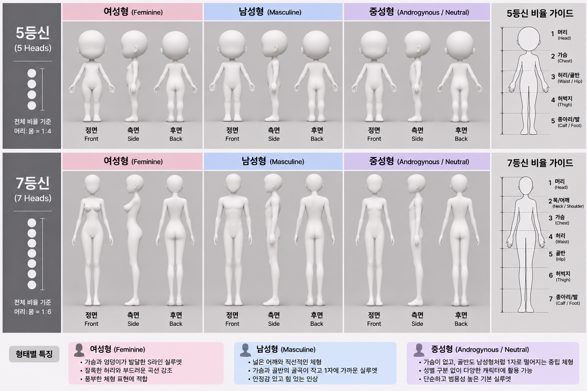
5·7등신 인체 비율 비교 인포그래픽.png
5·7등신 여성·남성·중성 체형 비교표. 체형 축과 등신 축을 함께 제시한다. 숫자·비율의 정확성은 별도 검증하지 않았다.
img-016 · 파일 기록 2026-11-04T08:35:19.171146+00:00 · 직접 첨부 대응 미확인

5·7등신 체형별 3D 인체 비율 가이드.png
5·7등신 여성·남성·중성 체형 비교표. 016과 유사하지만 픽셀 동일하지 않다.
img-017 · 파일 기록 2026-11-04T08:33:46.939091+00:00 · 직접 첨부 대응 미확인

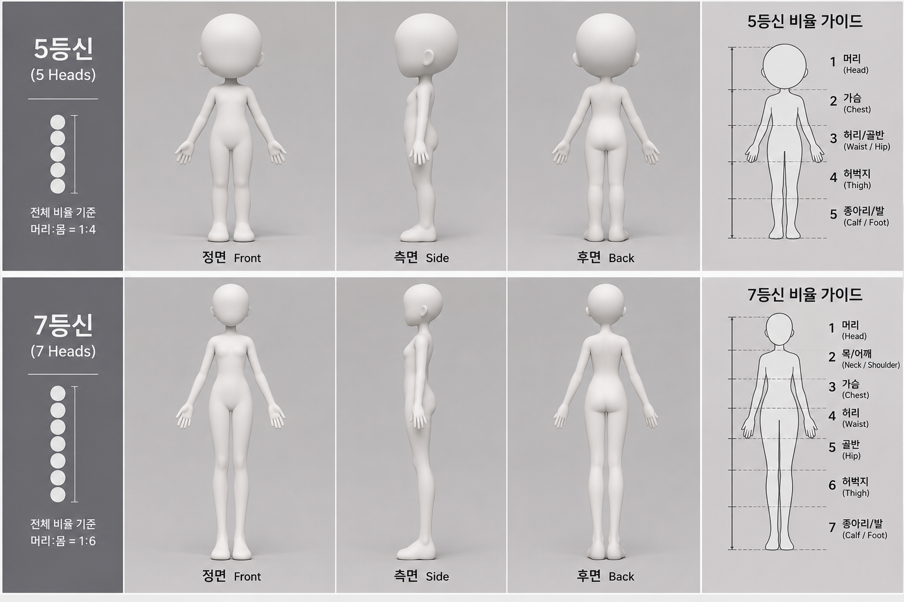
5등신과 7등신 인체 비율 가이드.png
5등신·7등신으로 표기한 정면·측면·후면 인체 가이드.
img-018 · 파일 기록 2026-11-04T07:44:42.311965+00:00 · 직접 첨부 대응 미확인

강아지 3D 스타일 비교표.png
눈·코·흰 무늬·갈색 귀가 남은 강아지 3유형 3방향. 의인화·데포르메형 팔은 몸에 가깝다.
img-070 · 파일 기록 2026-11-04T09:09:42.620913+00:00 · 직접 첨부 대응 미확인

강아지 캐릭터 3D 유형 비교표.png
눈·코·무늬를 지운 단색 강아지 3유형. 팔과 귀가 여전히 몸·머리 가까이 놓인다.
img-072 · 파일 기록 2026-11-04T09:10:53.926704+00:00 · 직접 첨부 대응 미확인

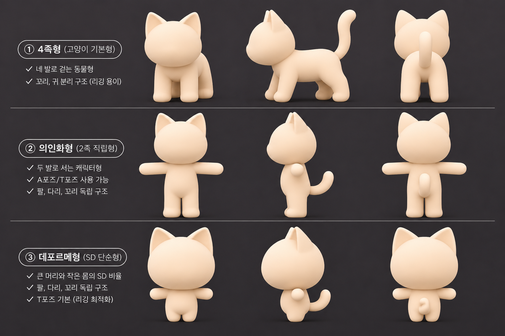
고양이 3D 포즈 및 구조 시트.png
고양이 4족·의인화·데포르메형 도표. 아래 두 유형은 팔을 벌린 T형 정면·후면으로 보인다.
img-073 · 파일 기록 2026-11-04T09:22:04.262250+00:00 · 직접 첨부 대응 미확인

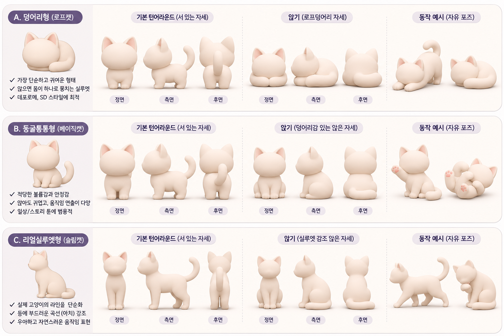
고양이 마스코트 3D 타입 가이드.png
고양이 체형·다양한 포즈 도표. 이번에 읽은 두 대화의 해당 시각 메시지와 직접 연결하지 못했다.
img-074 · 파일 기록 2026-11-05T01:29:46.038409+00:00 · 직접 첨부 대응 미확인

과장된 근육 마네킹 턴어라운드.png
극단적으로 작은 관절과 큰 근육 덩어리. 복근·근섬유·골격 경계가 세세히 강조된 남성 마네킹 3면도.
img-075 · 파일 기록 2026-11-04T08:49:06.226321+00:00 · 직접 첨부 대응 미확인

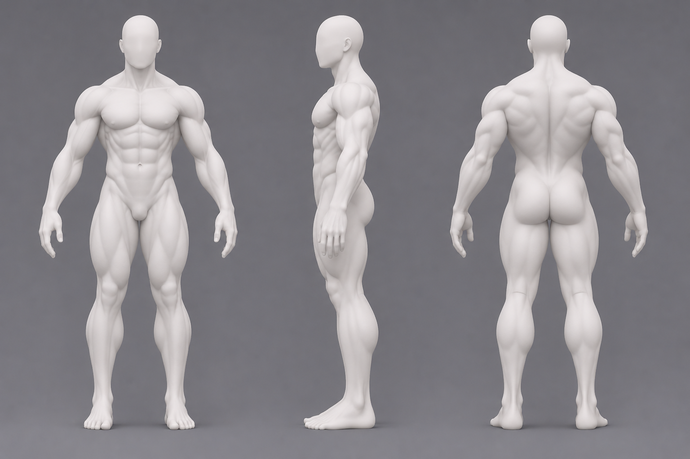
근육질 남성 마네킹 3면도.png
근육질 남성 마네킹 3면도. 상대적으로 자연스러운 비율과 세부 근육 표면.
img-076 · 파일 기록 2026-11-04T08:46:25.118286+00:00 · 직접 첨부 대응 미확인

매끈한 근육형 마네킹 3면도.png
075에 비해 복근 분할과 근육 세부선을 줄이고 허벅지·종아리 등을 큰 매끈한 덩어리로 표현한 남성 마네킹 3면도.
img-078 · 파일 기록 2026-11-04T08:51:41.676807+00:00 · 직접 첨부 대응 미확인

매끈한 여성 마네킹 전후좌우 턴어라운드.png
가는 관절과 강하게 강조된 쇄골·골반·무릎 등의 여성 마네킹 3방향. 파일명에는 전후좌우라고 쓰였지만 실제 큰 도상은 세 방향이다.
img-079 · 파일 기록 2026-11-04T08:54:44.336127+00:00 · 직접 첨부 대응 미확인

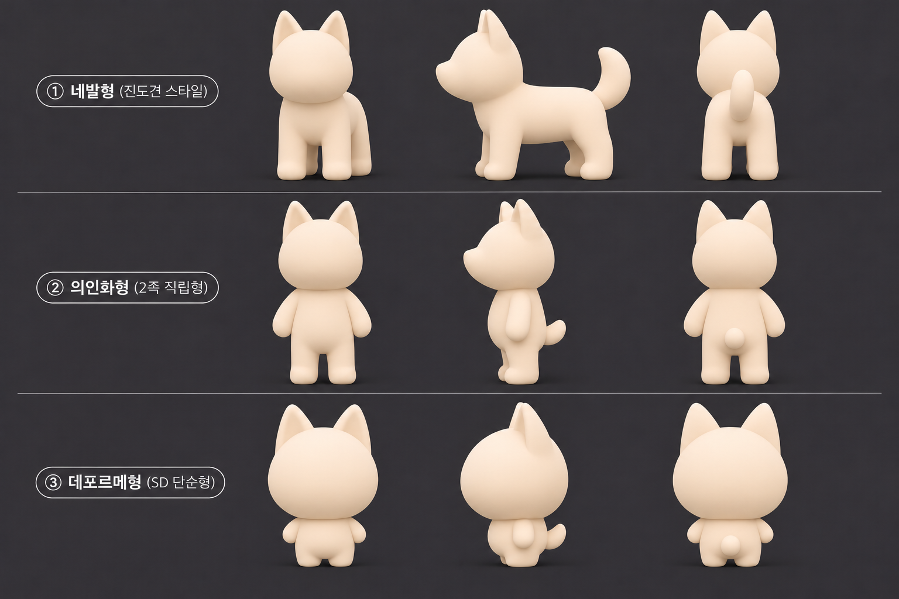
매트 3D 진돗개 자세 비교 인포그래픽.png
단색 뾰족귀 강아지 3유형. 의인화·데포르메형의 팔이 몸 가까이 있다.
img-081 · 파일 기록 2026-11-04T09:12:16.683492+00:00 · 직접 첨부 대응 미확인

미니멀 여성 마네킹 3면도.png
079보다 근육·뼈의 돌출 표현을 줄인 매끄러운 여성 마네킹 3면도. 얇은 허리·관절과 체형 차이는 유지된다.
img-083 · 파일 기록 2026-11-04T08:57:02.521472+00:00 · 직접 첨부 대응 미확인

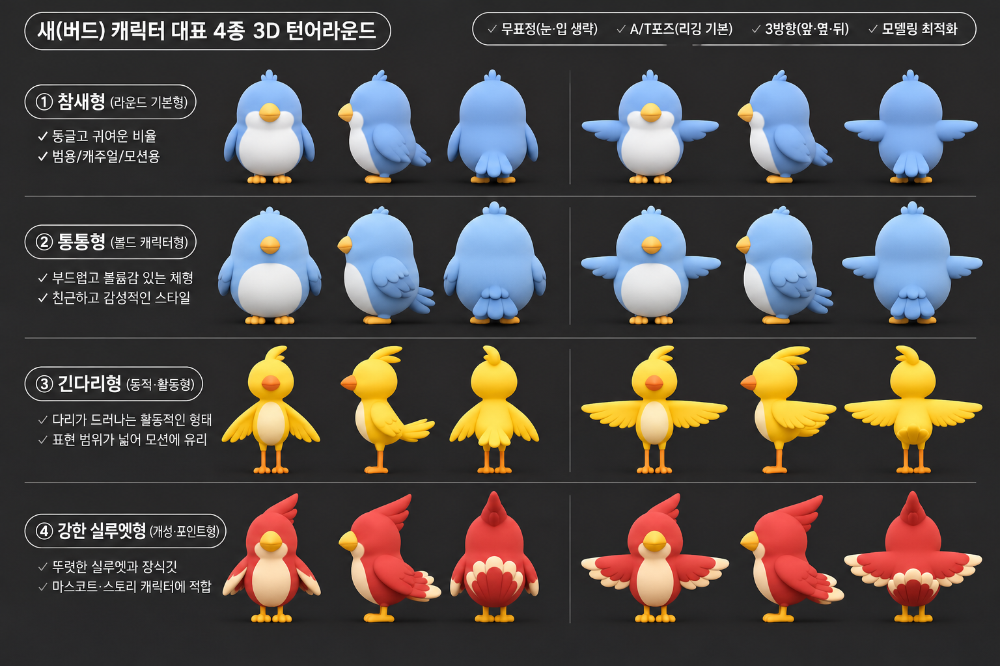
새 캐릭터 4종 3D 턴어라운드.png
새 캐릭터 4유형 A/T 포즈 도표. 색·눈·부리 등 종 특징이 남아 있다.
img-084 · 파일 기록 2026-11-04T09:32:53.204436+00:00 · 직접 첨부 대응 미확인

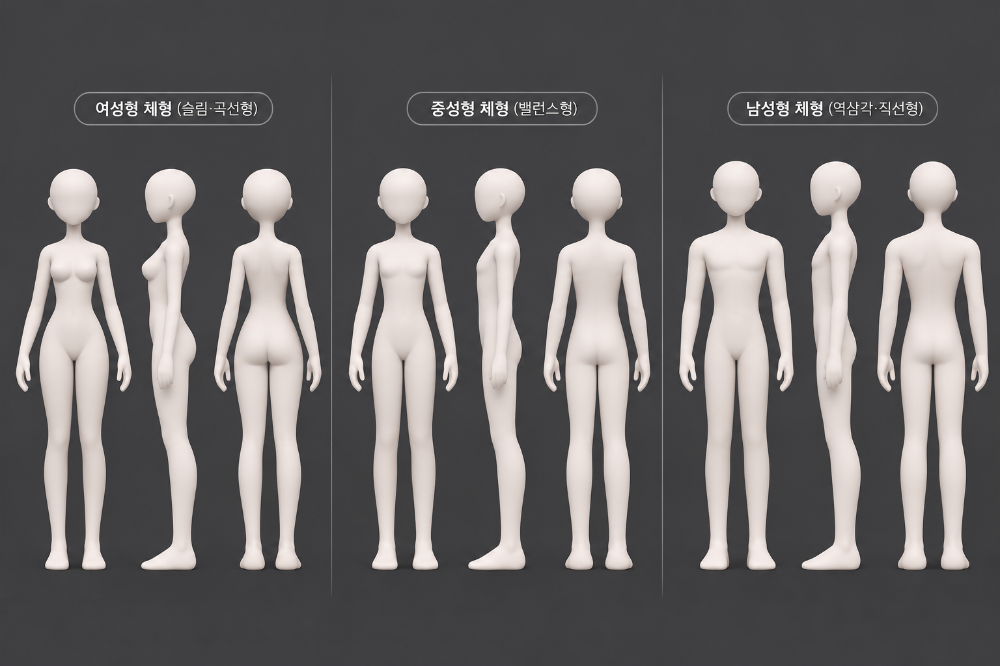
여성·중성·남성형 체형 마네킹 비교표.png
관절 구분을 줄인 여성·중성·남성 마네킹 3유형 3면도.
img-100 · 파일 기록 2026-11-04T09:00:46.040541+00:00 · 직접 첨부 대응 미확인

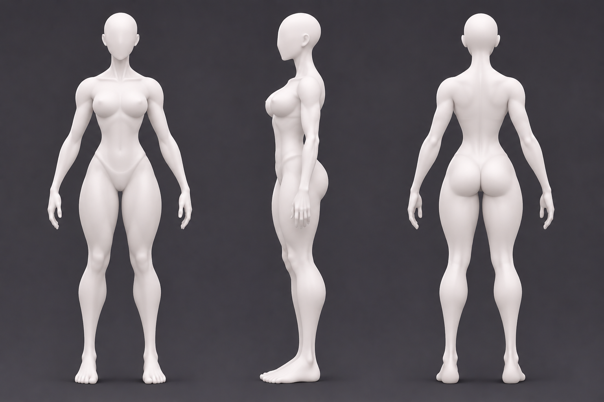
이미지 제목을 입력해주세요.png
가는 관절과 굴곡이 강조된 여성 마네킹 3면도. 자동 파일명만으로 역할을 판정하지 않았다.
img-101 · 파일 기록 2026-11-04T08:52:48.399375+00:00 · 직접 첨부 대응 미확인

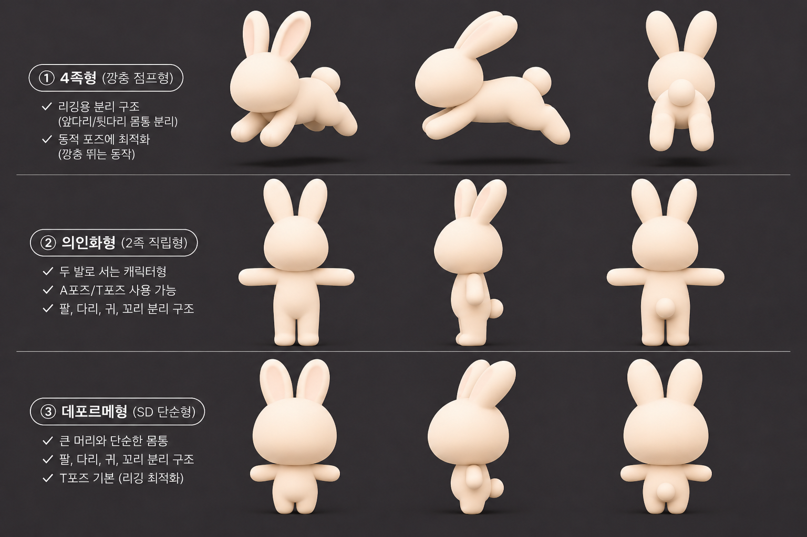
토끼 캐릭터 3종 턴어라운드 시트.png
토끼 앞·뒷다리가 몸에서 떨어진 도약형 및 두발형 T포즈 도표. 포즈의 시각적 분리는 보이나 실제 메시·리깅의 분리 성공은 미확인.
img-103 · 파일 기록 2026-11-04T09:24:10.417624+00:00 · 직접 첨부 대응 미확인

펭귄 캐릭터 리깅 턴어라운드 가이드.png
펭귄 눈·코가 사라지고 A/T 포즈가 명시된 도표. 검정/크림색 몸 무늬와 노란 발은 남아 있어 무늬 제거 요청까지 완수했다고 보기 어렵다.
img-104 · 파일 기록 2026-11-04T09:29:02.391292+00:00 · 직접 첨부 대응 미확인

펭귄 캐릭터 스타일 턴어라운드 가이드.png
펭귄 여러 체형과 표정·동작. 얼굴·눈·부리와 검정/흰색 몸 무늬·색이 보인다.
img-105 · 파일 기록 2026-11-04T09:27:28.385186+00:00 · 직접 첨부 대응 미확인